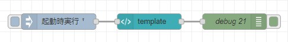
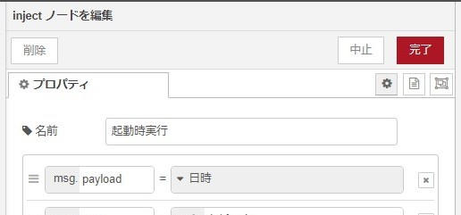
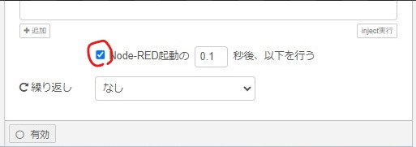
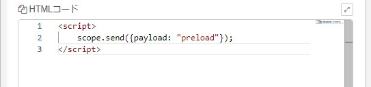
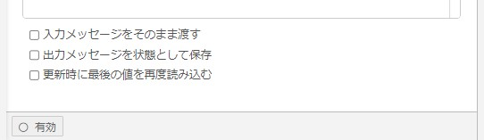
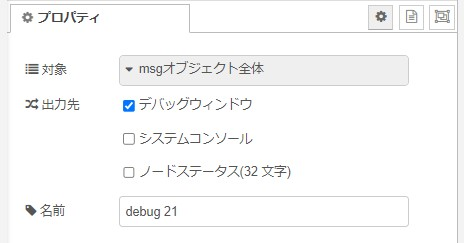
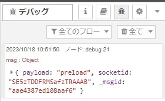
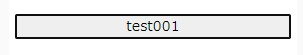
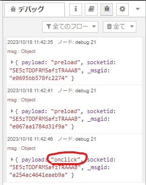

node-red-dashboard（ダッシュボードノード）は、 Angular／Angular Materials／JQueryを使用したWEB UIです。
ダッシュボードノードの一つであるtemplateノードで、オリジナルなノードを作成することができます。
オリジナルなノードを作る際に、スクリプト内の関数から次のノードへメッセージを送信したいことがあります。
WebUI上なら、以下のように簡単に行うことができます。（Angular Materialを使っています）
<md-button ng-click="send({payload:'ABC'})">
Send
</md-button>しかし、スクリプト上では少し厄介です。
例を挙げながら説明します。
まず以下のようにノードを設置し繋げてください。

「inject」の設定。


「template」の設定。
以下のようにHTMLコードを入力します。下の3つのチェックボックスは全てOFF。
<script>
scope.send({payload: "preload"});
</script>

「debug」の設定。

デプロイした時orダッシュボードを開いた時に、以下のようにデバッグに表示されると思います。「次のノードにメッセージが送られた」ということが分かります。

scopeはAngularJSにおいて、WebUIとスクリプト間のデータやイベントのやりとりに利用する特別なオブジェクトです。Node-RED起動時にscopeに対して、send関数のような機能が定義されているようです。
scopeを使えば今回の目的は達成できそうですが、関数内でscopeをそのまま使ってもうまくいきません。
例えば、「template」のHTMLコードを以下のようにしてください。
<input type="button" value="test001" id="test001">
<script>
scope.send({payload: "preload"});
var test002 = document.querySelector("#test001");
test002.onclick = function (event) {
scope.send({payload: "onclick"});
};
</script>
こんな感じに表示されたと思います。
コードについて簡単に説明しておきます。
input要素にidグローバル属性を付与し、さらにJavaScript内で var test002 = document.querySelector("#test001"); とすることで、input要素の様々な情報を得ることができます。
ここでは、test002.onclick = function (event) {} とすることで、クリックイベントを取得しています。
しかし、実際にボタンを押しても、デバッグには何も追加表示されません。（「onclick」の表示を期待しているのですが）
私は以下の方法を試してみました。もっと洗練されたやり方があるのかもしれませんが、うーん、分かりませんでした。
<script>
scope.send({payload: "preload"});
var nodeScope = scope; ★ここ追加
var test002 = document.querySelector("#test001");
test002.onclick = function (event) {
nodeScope.send({payload: "onclick"}); ★scope ⇒ nodeScopeに編集
};
</script>ボタンを押すと以下のように「onclick」が転送されます。

ひとまず関数内でメッセージの送信を実行することができました。